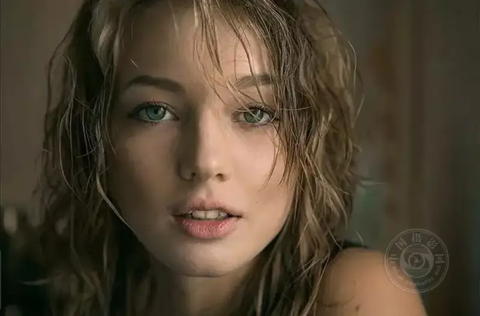
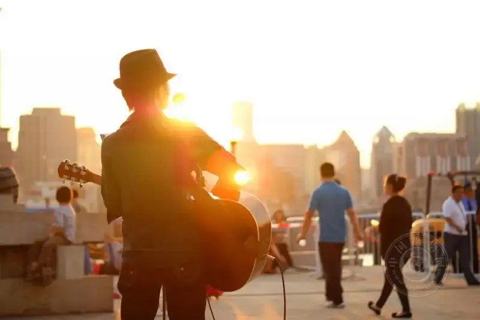
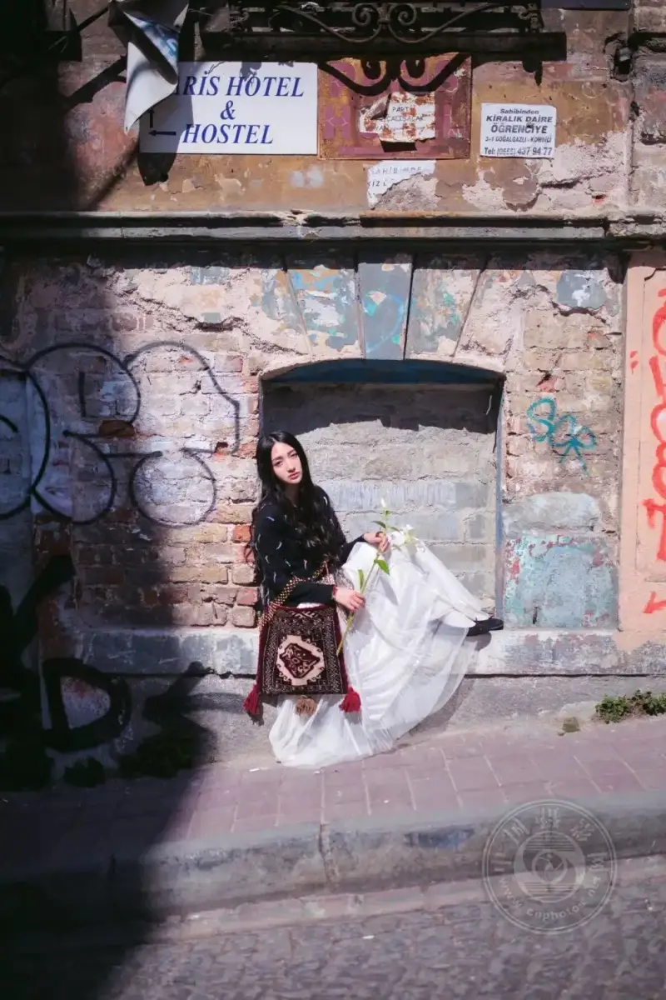
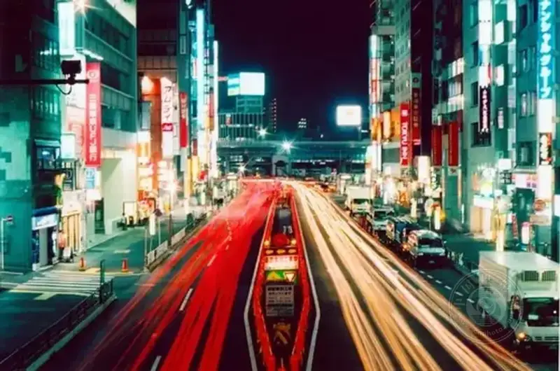
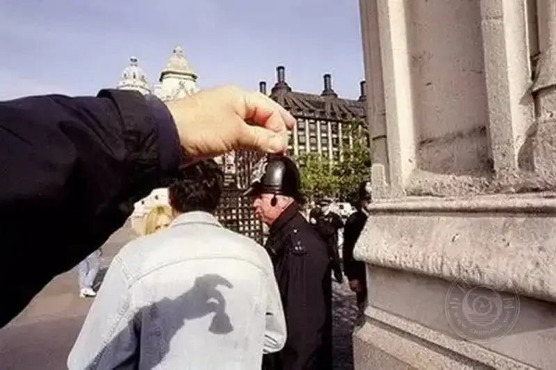
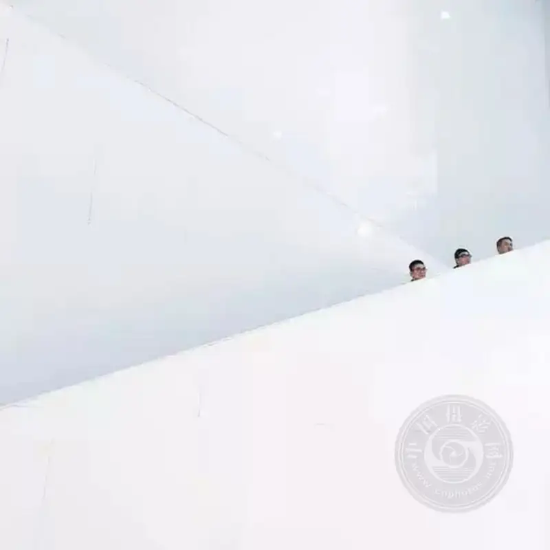

Photography is like time.
It can change everything, take away everything, and leave everything behind.
We use photos to record life, and let the youth that belongs to you and me become an eternal memory.
Today I have gathered some famous lines on photography for your reference:
1Keep the rule of thirds in mind
This is the basic step of composition. It is basic, but it is a useful and practical method that gives a photo the most basic readability.
2Eyes speak

When you shoot a person, this is an element you cannot ignore. Catch the emotion in the eyes, and you catch the emotion of the frame. Pay close attention.
3
Light and shadow create dramatic tension
From the face shaped by side light, to the silhouette formed in back light, all of this strengthens the tension of the frame and adds a dramatic sense of story. In the end, understanding light is half the battle.


©Xie Jing
4Simplicity is beauty
Do not be greedy. One photo needs one clear theme or subject. A simple photo is often more powerful. See minimalism.
5
Make full use of depth of field
Do not fixate on shallow depth of field, with a sharp front and a blurred back, as if that is very professional. Try more different effects.
© Xie Jing
6Shutter speed is a magic wand

You have all seen them: a floating girl at a fast shutter, or flowing water, light graffiti, and crowds and traffic at a slow shutter. There are many ways to play. Once you know how to use it, your photos will work magic.
7
Angle changes the viewpoint

Why are most people's photos so dull? Because people will not let go of their pride, and they are too lazy to move to a different height. So the photos all share the same viewpoint and the same look. Change the angle, and the photos become more exciting.
8
Contrast is the trump card

Whether black vs white, light vs dark, red vs green, large vs small, hard vs soft, or good vs evil, as long as there is contrast, the photo has charm. This is an iron rule.